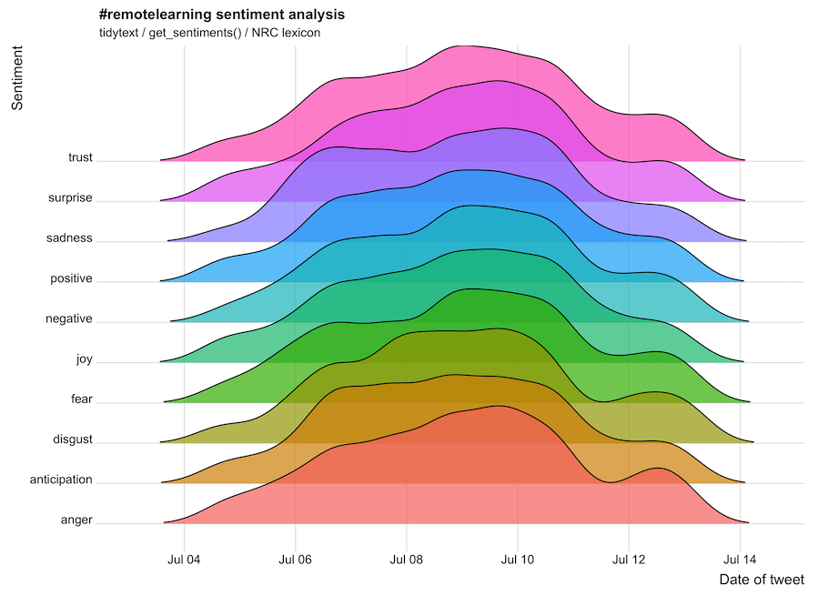
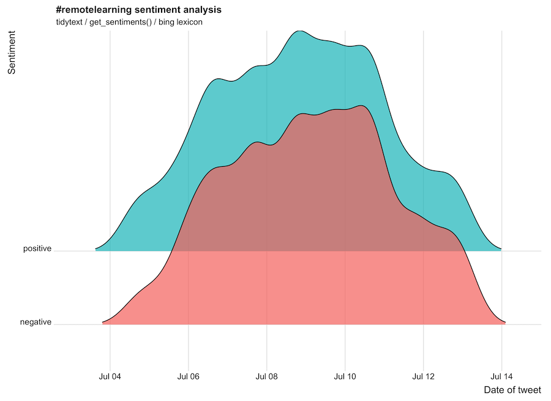

Twitter API
16 July, 2020
Aim
Use the Twitter API as a method of data collection to investigate how educators tweeting using education hashtags (EG: #remotelearning) are adapting their online learning designs to support positive socioemotional outcomes for their students.
Scope
This evaluation was conducted on Monday 13 July 2020 at the commencement of the second stage of home schooling restrictions.
Purpose
Investigate how teachers support students’ socioemotional outcomes in online learning contexts through aspects of their learning design.
Background
As a response to the coronavirus (COVID-19) pandemic Victorian schools implemented remote learning during Term 2 (April–June 2020) where most students learnt from home under their school’s guidance.
A surge in reported cases has led to a return to Stage 3 ‘Stay at Home’ restrictions with most students in Victorian schools returning to flexible and remote learning for the start of Term 3 (20 July 2020).
Results
Sample of tweets with #remotelearning
Timeline of tweets

Most popular tweet
Most retweeted tweet
Most liked tweet
Sentiment matching
The tidytext package makes it easy to match words against different lexicons (vocabularies). For this analysis we will compare results using the NRC and bing lexicons.


|
|